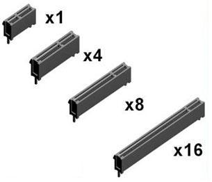
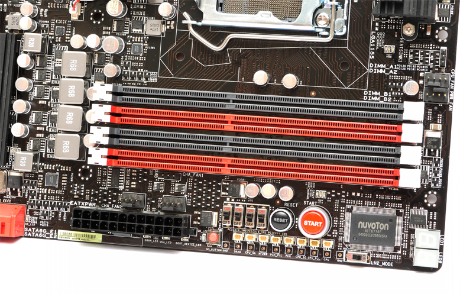
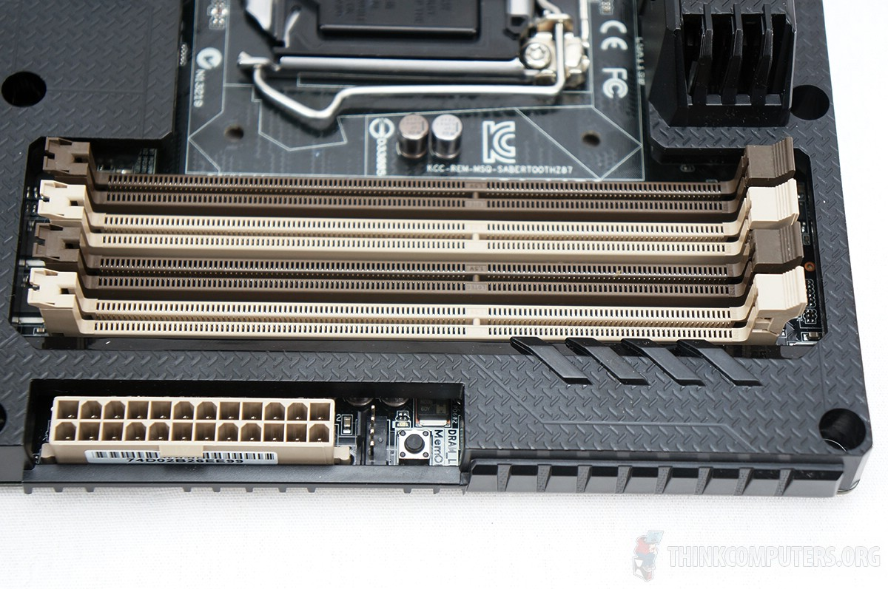
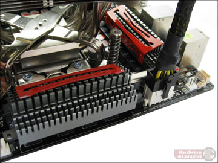
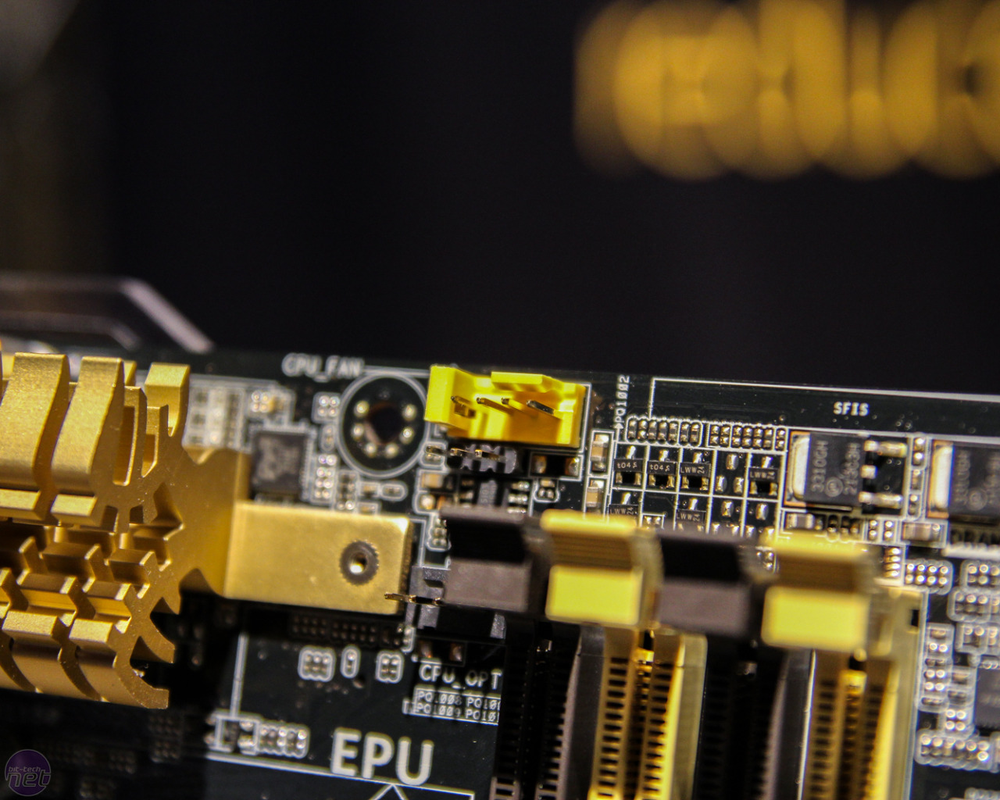
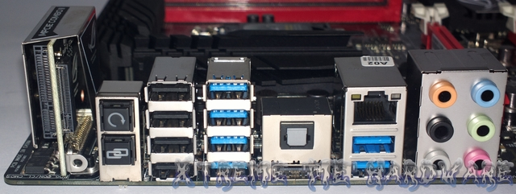

- Placas-mãe não são apenas o Hardware que agrupa interface e componentes, é o hardware que têm mais influência em um computador quando falamos em estabilidade e possibilidades de expansões.
- No ínicio, as placas-mãe serviam simplesmente como uma interface agrupadora de componentes, uma placa de circuito sem vida própria.
- A medida que novas tecnologias foram surgindo, mais e mais componentes passaram a ser integrados à placa-mãe, fazendo com que as placas-mãe ganhassem uma posição de destaque no cenário de computadores.
Placas-mãe
Introdução
Introdução
Definição
- Uma placa-mãe é a principal placa de circuito impreso de um computador, e outros sistemas expansíveis e não expansíveis. Ela mantém muitos dos principais componentes eletrônicos do sistema, como o CPU, memórias, placas de vídeo, entre outros conectores e perífericos.
- O PCB (Printed Circuit Board), ou placa de circuito impresso, é uma “chapa” que é composta por fenolite, fibra de vidro, filme de poliéster, filmes específicos à base de diversos polímeros, entre outros materiais.
- Possui a superfície cobertura por uma fina película de cobre, prata, ligas à base de ouro, níquel entre outros, nas quais são impresso os circuitos condutores onde serão fixados os componentes eletrônicos.
- Atualmente, placas-mãe modernas possuem PCBs com várias camadas, aumentando a estabilidade e durabilidade das mesmas.
História
Um pouco da história das placas-mãe
- Antes dos processadores, os computadores eram grandes Mainframes, seus componentes eram conectados por um “backplane” (grupo de conectores elétricos) atráves de fios.
- Com o surgimento dos processadores, memórias e outros periféricos, isso mudou.
- Durante a década de 80 e 90, com o aumento do número da função dos periféricos, o modelo de agrupamento de periféricos através de um PCB se tornou mais ecônomico.
História
Alguns momentos
- 1981 - IBM “Planar” Breadboard
- 1984 - IBM Personal Computer AT
- 1986 - Nascimento da Gigabyte
- 1987 - Nascimento da Elitegroup Form - ECS
- 1989 - Asus é fundada
- 1993 - Intel PPGA (Plastic pin grid array)
- 1995 - Intel lança o formato ATX
História
Alguns momentos
- 1997 - Intel começa a fabricar placas-mãe
- 1998 - Novo formato, Micro ATX
- 2001 - Novo formato, Mini ITX by VIA
- 2005 - Intel Technology Extended
- 2007 - ASUS consolidada como maior empresa do ramo
- 2009 - Novo formato, Mobile ITX by VIA
Fabricantes principais
- Asus
- ASRock
- Biostar
- ECS
- EVGA
- Foxconn
- Gigabyte
- Intel
- MSI
- Sapphire
Constituição básica
- Uma placa-mãe é composta por diversos outros componentes interligados entre si. Talvez por isso, ela é a parte do computador que pode apresentar mais falhas.
- Basicamente uma placa-mãe é formada por um PCB, slots de memórias, socket do CPU, slots PCI-e, portas SATA, saídas de áudio, entre outros.
PCB
- O PCB (Printed Circuit Board) ou placa de circuito impresso, é a placa onde são soldados os demais componentes. O PCB é composto por fenolite, fibra de vidro, filme de poliéster, filmes específicos à base de diversos polímeros, entre outros materiais.
- Possui a superfície cobertura por uma fina película de cobre, prata, ligas à base de ouro, níquel entre outros, nas quais são impresso os circuitos condutores onde serão fixados os componentes eletrônicos.
- Um PCB de uma placa-mãe atual, é composto por cerca de 4 a 10 camadas, sendo que cada camada possui parte das trilhas necessárias, e posteriormente unidas através de pontos de solda estrategicamente posicionados.
- Como o PCB é um dos componentes de mais baixa tecnologia, é bastante comum que sua produção seja terceirizada em países onde a mão de obra é barata (China).
PCB

Socket CPU
- O socket do CPU é onde o CPU é acomodado na placa-mãe. Antigamente, todos os processadores tinham o mesmo set de pinos que poderiam conectar o CPU na placa-mãe, chamados de PGA (Pin Grid Array). Estes pinos eram encaixados num socket chamado socket 7. Isso significava que qualquer processador poderia ser usado em qualquer placa-mãe.
- Atualmente, os sockets são divididos por plataforma (AMD e Intel).
- AMD ainda usa sockets PGA, enquanto que a Intel migrou para os novos LGA (Land Grid Array) , também conhecidos como socket T. A principal diferença e vantagem do LGA, é que os pinos fazem parte do socket, e não do CPU, fazendo com que o problema de pinos entortados ficassem cada vez mais raros.
- Os principais sockets atuais são:
Socket CPU
- AMD
- AM3+
- AM3
- G34 (Servidores)
- FM2
- Intel
- LGA 1150
- LGA 1155
- LGA 1366
- LGA 2011
- rPGA 988A (Notebooks)
- LGA 1567 (Servidores)
Chipsets
- Os chipsets são um conjunto de circuitos integrados que são responsáveis por fazer a comunicação entre o CPU e todos os outros componentes.
- Até pouco tempo, placas-mãe possuiam dois principais chipsets, o Northbridge e Southbridge.
- O Northbridge era o responsável por fazer a comunicação e controle entre CPU, memória RAM, slots PCI-e. Atualmente, em placas-mãe modernas, o Northbridge não mais existe, já que esse trabalho fica a cargo do próprio CPU. O processo de fabricação de CPUs foi melhorando com o passar dos anos, atualmente temos CPUs usando o processo de fabricação de 22nm, sendo assim possível, incorporar no DIE do CPU um chipset substituto do Northbridge.
Chipsets
- Processadores AMD possuem o controlador de memória imbutido no CPU, assim como os Intel, a diferença é que não possuem controladores PCI-e, fazendo com que placas-mãe para processadores AMD ainda terem o Northbridge.
- O Southbridge é o responsável por fazer a conexão de "baixa velocidade", tais como USB, Sata, BIOS e super I/O.
- Os principais fabricantes de chipsets atualmente são, AMD, Intel, VIA e SiS. A Nvidia parou sua fabricação de chipsets em 2009.
PCI
- Ao longo da história da plataforma PC, tivemos uma extensa lista de barramentos, começando com o ISA de 8 bits, usado nos primeiros PCs, passando pelo ISA de 16 bits, MCA, EISA, e VLB, até finalmente chegar no barramento PCI, que sobrevive até os dias de hoje.
- O PCI é um barramento de 32 bits, que opera a 33 MHz, resultando em uma banda total de 133 MB/s, compartilhada entre todos os periféricos ligados a ele. O PCI trouxe recursos inovadores (para a época), como o suporte a plug-and-play e bus mastering e, comparado com os barramentos antigos, ele é relativamente rápido. O grande problema é que ele surgiu no começo da era Pentium, quando os processadores ainda trabalhavam a 100 MHz. Hoje em dia temos processadores quad-core se aproximando da casa dos 4 GHz e ainda assim ele continua sendo usado, com poucas melhorias.
PCI Express
- PCI Express foi criado em 2004, por uma parceria entre Intel, IBM, HP e Dell, o objetivo principal era substituir o PCI, AGP entre outros, trazendo maior velocidade, taxa de transfêrencia e largura de banda. Seu uso mais notável é com placas de vídeo. Atualmente encontra-se na versão 3.0 (985 MB/s (8 GT/s) ou seja, um PCIe x16 (16 linhas) possui 15.75 GB/s (128 GT/s) ).
- Existem 4 tipos de slots PCI Express, que vão de x1 a x16. Estes números indicam quantas linhas de dados são utilizadas pelo slot e, consquentemente a largura de banda disponível.
- 
PCI Express
- Cada linha PCI Express utiliza 4 pinos de dados (dois para envio de dados, e dois para recepção de dados), que operam em modo full-duplex, podendo transmitir e receber dados simultaneamente.
- Atualmente, existem duas versões de PCI Express sendo usadas, o PCI Express 2.0 e o PCI Express 3.0, sendo que este último vem se tornando cada vez mais comum, fazendo com que os PCI Express 2.0 desapareçam em breve.
- O PCI Express 2.0 existe desde 2007 e oferece 500 MB/s por linha, ou seja, um PCI Express x16 consegue fornecer até 8 GB/s de largura de banda.
- O PCI Express 3.0 fora lançado em novembro de 2010, conta com 985 MB/s por linha, sendo assim, um PCI Express x16 consegue fornecer até 15.75 GB/s de largura de banda.
- Em novembro de 2011, o PCI-SIG (Peripheral Component Interconnect Special Interest Group) anunciou as especificações do PCI Express 4.0, que contará com 1969 MB/S por linha, totalizando 31.51 GB/s de largura de banda em um PCI Express x16.
Slots de memória
Uma placa-mãe possui de 1 a 6 slots de memória ram, esse número pode aumentar se levarmos em consideração placas-mãe para servidores.
Sata
Substituto direto do PATA (IDE), SATA (Serial Advanced Technology Attachment) atualmente está na versão 3.0. As placas-mãe geralmente contam com 2 a 8 portas Sata. Algumas possuem controladoras integradas ao processador, e outras direto ao Southbridge da placa-mãe.

Conector 20/24 pinos ATX
É um conector de 20 ou 24 pinos, responsável por fornecer energia para a placa-mãe.
Conector 4/8 pinos CPU
Similiar ao conector ATX, seu objetivo é fornecer energia para o CPU.
Demais conectores
Além dos principais conectores de energia, as placas-mãe possuem diversos conectores auxiliares para exaustores externos e internos.
Componentes em geral
- Os menores componentes das placas-mãe são os resistores e os capacitores cerâmicos. Eles são extremamente pequenos, medindo cerca de 1 milímetro quadrado, e por isso são instalados de forma automatizada e com grande precisão.
- Reguradores de tensão são formados por um conjunto de MOSFETs, algumas capacitores, e um controlador. Placas antigas utilizavam um único regulador de tensão, conforme os processadores foram evoluindo, o consumo de energia dos mesmos aumentou, e com isso as placas passaram a utilizar reguladores divididos em fases, onde temos vários reguladores de tensão trabalhando em paralelo, formando um sistema capaz de fornecer um volume maior de energia.
Componentes em geral
- Tecnicamente, um regulador de tensão com mais fases é superior, já que o trabalho é dividido entre mais componentes. Isso permite que o regulador desperdice menos energia na forma de calor, ao mesmo tempo em que oferece um fluxo de energia mais estável para o processador.
- Placas atuais utilizam reguladores de tensão com 4, 6, 8 ou mesmo até mais de 12 fases. É fácil descobrir o número de fases do regulador da placa-mãe, pois cada fase é composta por um conjunto idêntico de componentes, que são instalados em série próximo ao encaixe do processador.
Componentes em geral
- Os capacitores permitem armazenar pequenas quantidades de energia, absorvendo variações na corrente e entregando um fluxo estável para os componentes ligados a ele. Você pode imaginar que eles atuam como pequenas represas, armazenando o excesso de água na época das chuvas e entregando a água armazenada durante as secas.
- Placas atuais utilizam reguladores de tensão com 4, 6, 8 ou mesmo até mais de 12 fases. É fácil descobrir o número de fases do regulador da placa-mãe, pois cada fase é composta por um conjunto idêntico de componentes, que são instalados em série próximo ao encaixe do processador.
- Existem diversos tipos de capacitores. Tradicionalmente, os mais usados em placas-mãe e outros componentes são os capacitores eletrolíticos. Eles possuem uma boa capacidade e são muito baratos de se produzir, daí a sua enorme popularidade. O problema é que eles possuem uma vida útil relativamente curta, estimada em de 1 a 5 anos de uso contínuo, variando de acordo com a qualidade de produção e as condições de uso.
Componentes em geral
- Com o passar do tempo, os capacitores eletrolíticos perdem progressivamente a sua capacitância, deixando os componentes desprotegidos. O capacitor passa então a atuar como um condutor qualquer, perdendo sua função. Sem a proteção proporcionada por ele, os circuitos passam a receber diretamente as variações, o que, além de abreviar sua vida útil, torna o sistema como um todo mais e mais instável.
- A partir de 2006 os capacitores eletrolíticos começaram a dar lugar aos capacitores de estado sólido (chamados de Conductive Polymer Aluminum), onde a folha de alumínio banhada no líquido eletrolítico é substituída por uma folha de material plástico (um polímero) contendo um eletrolítico sólido de alumínio. Por não conterem nenhum tipo de líquido corrosivo, estes capacitores não são suscetíveis aos problemas de durabilidade que caracterizam os capacitores eletrolíticos.
Componentes em geral
- Embora mais duráveis, os capacitores de estado sólido são mais caros que os capacitores eletrolíticos. Como o uso deles aumenta em até US$ 10 o custo de produção da placa (o que acaba causando um aumento considerável no preço final), eles foram inicialmente usados apenas em placas "premium", desenvolvidas para o público entusiasta.
- Com o passar do tempo, entretanto, eles foram gradualmente se popularizando, até se tornarem norma. Hoje em dia, já é raro encontrar placas-mãe novas que ainda utilizam capacitores eletrolíticos.
BIOS
- A BIOS (Basic Input Output System), é um chip que contém todo o software básico necessário para inicializar a placa-mãe. O BiOS inclui também o setup, o software que permite configurar as diversas opções oferecidas pela placa.
- Por definição, BIOS é um software, mas por outro lado, ele fica gravado em um chip espetado na placa-mãe, o que ofusca uma definição concreta. Na maioria dos casos, o chip combina uma pequena quantidade de memória Flash (512 ou 1024 KB no caso dos chips PLCC), o CMOS (que é composto por 128 a 256 bytes de memória volátil) e o relógio de tempo real. Nas placas antigas era utilizado um chip DIP, enquanto nas atuais é utilizado um chip PLCC (Plastic Leader Chip Carrier), que é bem mais compacto.
- Recentemente, muitos fabricantes passaram a armazenar a BIOS em chips de memória Flash NOR de acesso serial, que também cumprem com a função, mas são menores e um pouco mais baratos que os chips PLCC. Outra tendência crescente é o uso de um segundo chip com uma cópia de backup da BIOS, que é usada em caso de problemas com a programação do chip principal (como no caso de um upgrade de BIOS mal-sucedido).
Atualização BIOS
- Como qualquer software, a BIOS também possui bugs. Atulizar a BIOS é preciso, pois muitas vezes uma atualização pode resolver vários problemas.
- O processo é simples, porém um pouco delicado, uma vez que se, por algum motivo o processo de atualização seja interrompido (queda de energia, por exemplo), o software da BIOS pode ser corrompido, e muitas vezes isso é um processo que não tem volta.
- Como anteriormente citado, os fabricantes têm investido em uma segunda BIOS, o que ajuda em muito caso uma tenha algum problema.
- Para atualizar a BIOS, você deve baixar a versão mais recente no site do fabricante, colocar o arquivo em uma mídia e bootar a máquina selecionando o arquivo récem baixado.
- Outra tendência, é a atualização da BIOS via sistema operacional, contudo, fale lembrar que este processo é bem mais suscetível a erros, já que estamos dependendo de um sistema operacional que muitas vezes não é estável (Windows por exemplo).
UEFI BIOS
- O UEFI surgiu por uma iniciativa da Intel, com o objetivo de oferecer um substituto mais moderno e flexível para a BIOS para uso em servidores e sistemas corporativos. Eventualmente a Intel entregou o desenvolvimento a um comitê, o UEFI forum, que inclui empresas como a AMD, Apple, Dell, IBM, Lenovo, Microsoft e até mesmo desenvolvedores de BIOS, como a AMI e a Phoenix.
- Para fins práticos, o UEFI tem a mesma função do BIOS: inicializar o hardware da máquina e inicializar o sistema operacional, transmitindo o controle para ele. A grande diferença fica por conta da forma como o software é estruturado e as funções adicionais que ele introduz.
UEFI BIOS
- O UEFI é estruturado de forma similar a um sistema operacional, com suporte a módulos, que podem oferecer funções adicionais diversas, como sistemas instant-on para navegar na web ou exibir arquivos de mídia sem precisar carregar o sistema operacional, sistemas de gerenciamento remoto que possam funcionar de forma independente do SO (permitindo reparar ou reinstalar o sistema remotamente, mesmo que o sistema não esteja conseguindo concluir o boot), funções de backup e diagnóstico, plataformas de virtualização e assim por diante.
- O UEFI oferece suporte a rede, bem como suporte a ambiente gráfico, dispositivos de armazenamento USB e até mesmo à placa de som, o que permite que navegadores, players de mídia e outros tipos de softwares possam ser usados diretamente sobre ele.
CMOS
- O CMOS serve para armazenar as configurações do setup. Como elas representam um pequeno volume de informações, ele é bem pequeno em capacidade.
- Assim como a memória RAM principal, ele é volátil, de forma que as configurações são perdidas quando a alimentação elétrica é cortada. Devido a isso, toda placa-mãe inclui uma bateria, que mantém as configurações quando o micro é desligado.
- A mesma bateria alimenta também o relógio de tempo real (real time clock), que, apesar do nome pomposo, é um relógio digital comum, que é o responsável por manter atualizada a hora do sistema, mesmo quando o micro é desligado.
Painel traseiro
- O painel traseiro de uma placa-mãe, é onde encontramos a maior parte das entradas e saídas da placa para periféricos e outros dispositivos removíveis.
- Geralmente é composta por portas USB, PS/2, Fireware, e-Sata, saídas de áudio, portas de rede, HDMI, VGA entre outros.
- 
Modelos e tipos
- Existem diversos tipos de placas-mãe, sejam elas para PCs, Notebooks, etc.
- Geralmente é composta por portas USB, PS/2, Fireware, e-Sata, saídas de áudio, portas de rede, HDMI, VGA entre outros.
Placas-mãe para servidores
- As placas-mãe para servidores são placas parecidas com as de computadores doméstico, apenas possuem mais conexões e slots de expansão, bem como algumas possuem mais de 1 socket para CPU.
Placas-mãe para notebooks
- Geralmente, são as placas menos expansíveis, por motivos óbvios, já que devido as dimensões de um notebook, muito dos seus componentes são onboards.
Placas-mãe para Desktops
- São as placas mais conhecidas e mais comuns.
Considerações finais
- Loading...
This is an example of quote text.
Obrigado!
Dúvidas?